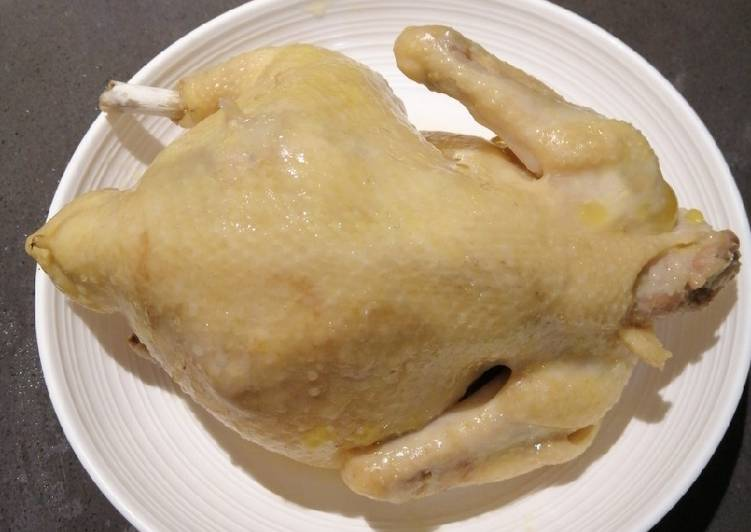

Easiest Steamed Chicken Recipe

Description:
Here is the easiest steamed chicken recipes. Only with sugar, salt, and ginger. But you can also add ginger juice, and wine
Ingredients:
- Whole Chicken (1kg)
- 3 full spoon of sugar
- 2 full spoon of salt
- 1 handful of chopped ginger
Steps:
- Mix sugar and salt
- Rub the mix onto the chicken. Do not forget add it also inside the chicken
- Let it stay for 3 until 6 hours. You can store in in your refrigeerator
- After 3-6 hours, insert the ginger inside the kitchen
- Place the kitchen on glass plate, then insert it into steamer
- Heat the stove, and wait until 1 hour
- Your chicken is ready. Chop and eat it
Home